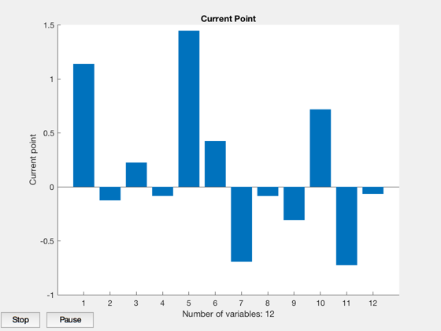
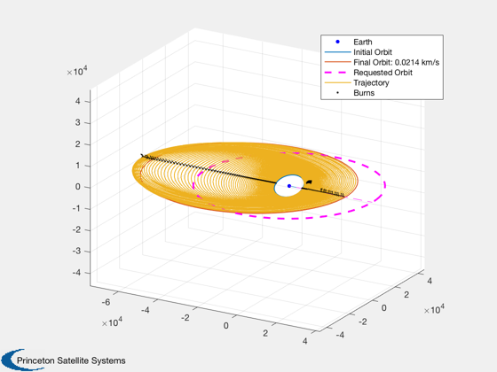
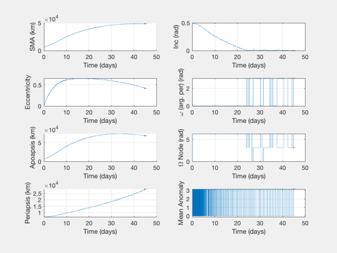
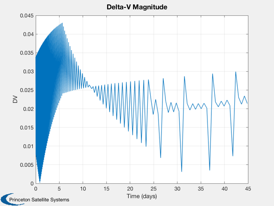
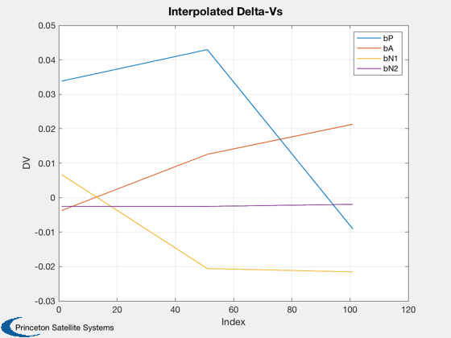
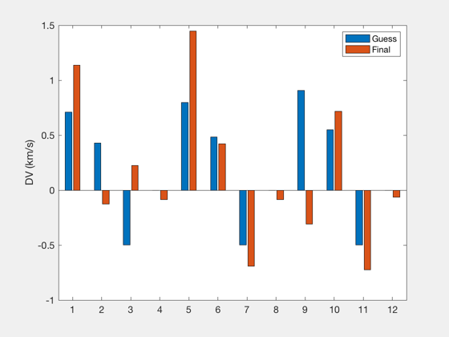

Contents
Impulsive 4X optimization with interpolated inner laps
LEO to GEO with inclination change
% Notes: for 3 / 3, InitialGuess and InitialGuessConst have quite different DV % profiles although the masses are within 3 kg. % 3 / 3 mass that was initialized from a 3/1 solution is substantially lower, % although DVs look quite different. %--------------------------------------------------------------------------- % Copyright (c) 2018 Princeton Satellite Systems, Inc. % All rights reserved. %---------------------------------------------------------------------------
Choose key and tween laps. Minimum of 2 key laps for tweens to be inserted.
A tween of "1" is the same as no tweens - only the key laps are used.
nKey = 3; nTween = 50; restart = false; % Initial conditions wArg = 0; % pi/2; elInitial = [6700 28*pi/180 0 wArg 0.002 -0.1]; elFinal = [42000 0 0 0 0.001 0.1]; % Analytical solution [dvT, dv1, dv2, et, Di1] = OptDVIncFromEl( elInitial, elFinal ); fprintf('Analytical impulsive DV: %g km/s\n',dvT) [dvL] = LTPlaneChange( elInitial(1), elFinal(1), elFinal(2)-elInitial(2) ); fprintf('Low thrust spiral DV: %g km/s\n',dvL)
Analytical impulsive DV: 4.20786 km/s Low thrust spiral DV: 5.8981 km/s
Optimize
data = OptimizeImpulsive4X; data.keyLaps = nKey; data.tweenLaps = nTween; % Total laps are (key - 1)*tween + 1 totalLaps = (data.keyLaps-1)*data.tweenLaps + 1; fprintf('Total number of laps: %d\n',totalLaps); %data.elementMask = [0 1 0 0 0 0 1 1]; % apses data.elementMask = [1 1 0 0 1 0 0 0]; data.W = [0.001 3 1 1 2]; % [sma inc raan w ecc] data.doInitial = true; if restart data.doInitial = false; end data.funGuess = @InitialGuess4X; costData = MassCostLinearFun; data.costData.sigma = 350; if restart data.dvsPrev = out.keydVsF; end [burns, elOutput, out]=OptimizeImpulsive4X(elInitial,elFinal,[],data);
Total number of laps: 101
Calculating initial feasible solution.
First-order Norm of
Iter F-count f(x) Feasibility optimality step
0 13 5.745456e+02 4.958e-07 3.904e+01
1 31 5.450219e+02 2.238e+00 5.682e+01 1.732e+00
2 46 5.402566e+02 3.885e+00 1.121e+09 8.660e-01
3 65 5.171601e+02 1.478e+01 2.733e+01 4.330e-01
4 81 5.176860e+02 8.197e+00 5.927e+01 1.604e-02
5 94 5.190952e+02 6.271e+00 2.448e+01 2.569e-02
6 107 5.216185e+02 5.261e+00 6.843e+01 2.619e-02
7 121 5.216972e+02 5.222e+00 2.024e+01 1.702e-02
Converged to an infeasible point.
fmincon stopped because the size of the current step is less than
the value of the step size tolerance but constraints are not
satisfied to within the value of the constraint tolerance.
 Report
OptimizerReport(out) PlotImpulsiveTrajectory(elInitial, burns, elFinal); PlotElementsImpulsive(elInitial, burns); dVs = reshape(out.tweendVsF,4,[])'; [time,tlabl] = TimeLabl(out.absTimes'); Plot2D(time,out.burns(:,1)',tlabl,'DV','Delta-V Magnitude') Plot2D(1:size(dVs,1),dVs,'Index','DV','Interpolated Delta-Vs') legend('bP','bA','bN1','bN2') NewFig('Initial and Final Key DVs'); bar([out.dVs0;out.keydVsF]') ylabel('DV (km/s)') legend('Guess','Final') %--------------------------------------
Total Delta-V (km/s):
4.86579493195725
Number of burns:
202
Initial elements, target, achieved:
Columns 1 through 3
6700 0.488692190558412 0
42000 0 0
48691.2929260388 0.000501470266914412 3.14159265358979
Columns 4 through 6
0 0.002 -0.1
0 0.001 0.1
3.14159265358979 0.417107698837399 3.14159265358979
Mission duration:
44.8403 Time (days)
Cost value:
521.697184119179
Iterations:
8
Constraint value:
5.22158311661262
Elapsed Time:
47.8805 sec
System mass:
521.697 kg
Masses:
391.163723557149 31.2930978845719 99.240362677458
    